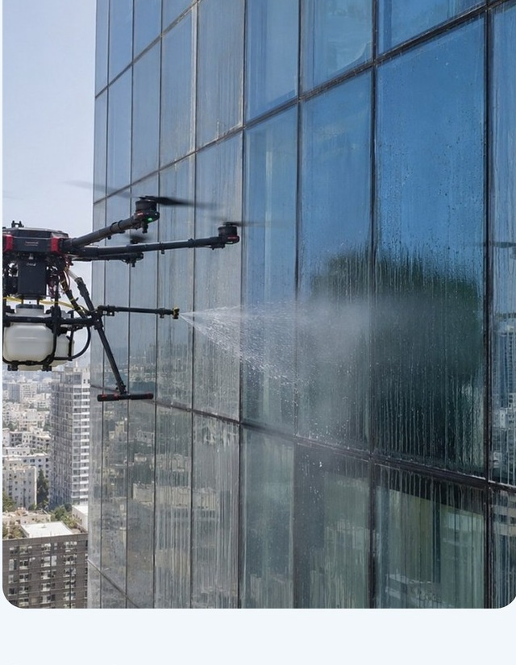

01 / OFFICE
מגדלי משרדים
קירות מסך, חלונות וחזיתות זכוכית. תכנון העבודה סביב הפעילות השוטפת של הבניין.
חזיתות, קירות מסך וחלונות — עם תכנון מותאם למבנה, תיאום עם מנהלי האחזקה ותיעוד מסודר בסיום.
בודקים התאמה לחזית, מתאמים עם הנהלת המבנה ומגדירים את היקף העבודה מראש.
מהאבחון ועד הדוח ←
ניקוי באמצעות רחפן תעשייתי, עם התאמה לסוג המשטח ולתנאי המבנה. מקירות מסך ועד מעטפת בניין מגורים.
קירות מסך, חלונות וחזיתות זכוכית. תכנון העבודה סביב הפעילות השוטפת של הבניין.
ניקוי מעטפת המבנה בתיאום עם ועד הבית או חברת הניהול, ועדכון הדיירים לקראת העבודה.
התאמת תוכנית הניקוי למבנים מסחריים, חיפויים ושטחי מעטפת רחבים.
רחפן הניקוי מקבל את אספקת המים מהקרקע. צוות התפעול מנהל את הטיסה ואת אזור העבודה לפי תוכנית מותאמת למבנה.
בחינת המשטח, הגישה ותנאי הסביבהתיחום ותיאום אזור העבודהבדיקת אישורים וביטוח לפני ביצועצילום ותיעוד מצב החזיתתמונות מתוך המצגת שצורפה. לחצו להגדלה ולהיכרות עם אופן העבודה.
תיעוד לפני ואחרי, סיכום ממצאים והמלצות להמשך — לפי היקף השירות שייקבע בהצעה.
ביטוח צד שלישי, אישורי הפעלה ותוכנית עבודה מסודרת. אתם יודעים מראש מי מגיע, איך עובדים ומה מקבלים בסיום.
אישור הביטוח נשלח אליכם לפני תחילת העבודה, כדי שתוכלו לבדוק את הכיסוי מראש.
רישיון מטיס, רישום רחפן ואישורי רשות התעופה האזרחית בהתאם לאתר ולתנאי ההפעלה.
משגיח באזור העבודה, תיאום עם הנהלת המבנה ובדיקת מזג האוויר לפני הטיסה.
מסמכי הביטוח והאישורים הרלוונטיים זמינים לבדיקה לפני קביעת מועד. היקף הכיסוי ותנאי העבודה כפופים למסמכים ולהצעה.
בודקים את החזית, החיפוי ותנאי הגישה כדי להתאים למבנה את שיטת הניקוי.
מקבלים הצעה ברורה, מתאמים מועד ומעבירים מסמכי ביטוח ואישורים לפני העבודה.
מכינים את השטח ומנקים לפי התוכנית, עם צוות תפעול ומשגיח על הקרקע.
מקבלים תמונות לפני ואחרי, סיכום ממצאים והמלצות לשמירה על החזית.
מניקוי נקודתי ועד תחזוקה לאורך השנה. היקף העבודה והתנאים נקבעים בהצעה פרטנית.
לרענון החזית או לניקוי נקודתי.
בדיקת התאמההצעת מחיר לפרויקטתיעוד העבודהנדבר על הפרויקט ←תוכנית עבודה מסודרת לאורך השנה.
תיאום מועדים מראשרצף תיעוד ותחזוקהאיש קשר קבועלבניית תוכנית שנתית ←תדירות מותאמת לשימוש ולתנאי הסביבה.
תוכנית עונתיתתיאום עם חברת האחזקהדוח לאחר הביצועלבדיקת התאמה ←לא כל מבנה מתאים. בוחנים את סוג החיפוי, גובה המבנה, אפשרויות הגישה, הסביבה ומצב הלכלוך לפני קביעת שיטת העבודה.
מתחילים מכתובת ותמונה של המבנה. לאחר בדיקת ההתאמה והיקף העבודה, ניתן לתאם אבחון ולהכין הצעה מפורטת.
העבודה מתוכננת בתיאום עם הנהלת המבנה. אזור העבודה עשוי להיות מתוחם; היקף ההפרעה תלוי בתנאי המקום ובתוכנית הביצוע.
לפי התוכנית המוצגת: תיעוד לפני ואחרי, סיכום ממצאים והמלצות לתחזוקה בהמשך. הפרטים הסופיים נקבעים בהצעת השירות.
שם, טלפון וכתובת המבנה — זה כל מה שצריך כדי להתחיל.
פרטי הקשר מתוך המצגת שצורפה.
דמו עיצובי · התמונות והתוכן מבוססים על החומרים שצורפו.